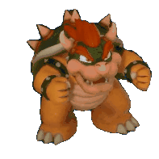

about me
Hi again, I'm Flow a 19 year old cringefail loserboy from the UK (i'm not british don't worry).
This website will be a little playground for me to make stuff in. I discovered neocities through hackerling's website in 2023 and discovered the magical world of the indie web. What shocked me was how unique and special it was, it was unlike anything else I've seen on the internet.
I made this website in 2023 but ngl it was pure ass. It literally only had a small about me page, my social links, and a guestbook. And that's it. In 2024 after taking a gap year from uni and while looking for jobs I had this sudden drive to work on it again, and so I completely remade the website and actually used divs! (wow). I took some inspiration from other websites and fast forward a few weeks and now my new layout is released.
As of typing this I only have two pages but eventually I wanna add a blog (that I will hopefully remember to update), and a user submitted gallery using strawpage. Maybe eventually I'll add my own games/art/other stuff???
In case you're wondering where the name "flowtyle" came from, it's pretty unremarkable. In 2024 I wanted to change my old username "Funlo" to something less cringe. This is because I tried competitive splatoon and hearing people refer to me with my old username in vc made me hate it and I wanted a more generic username.
I wanted my username to start with an "F" because my real life name does, and so I literally went to the directionary to look at words I liked. Came up with a few words (fizzy, flare) before I got the name flow and sticked with it. Obviously though I can't use that username for handles so I had to add something to it. So I thought of some of my favourite characters which one being sceptile, which is my favourite pokemon. So I decided to eventually go with flowtyle (not flowtile cause that looks stupid), and that's the username I've been using since.
I've changed my username like 10 times at this point but I swear this is the one i'm using for the rest of my internet life.
